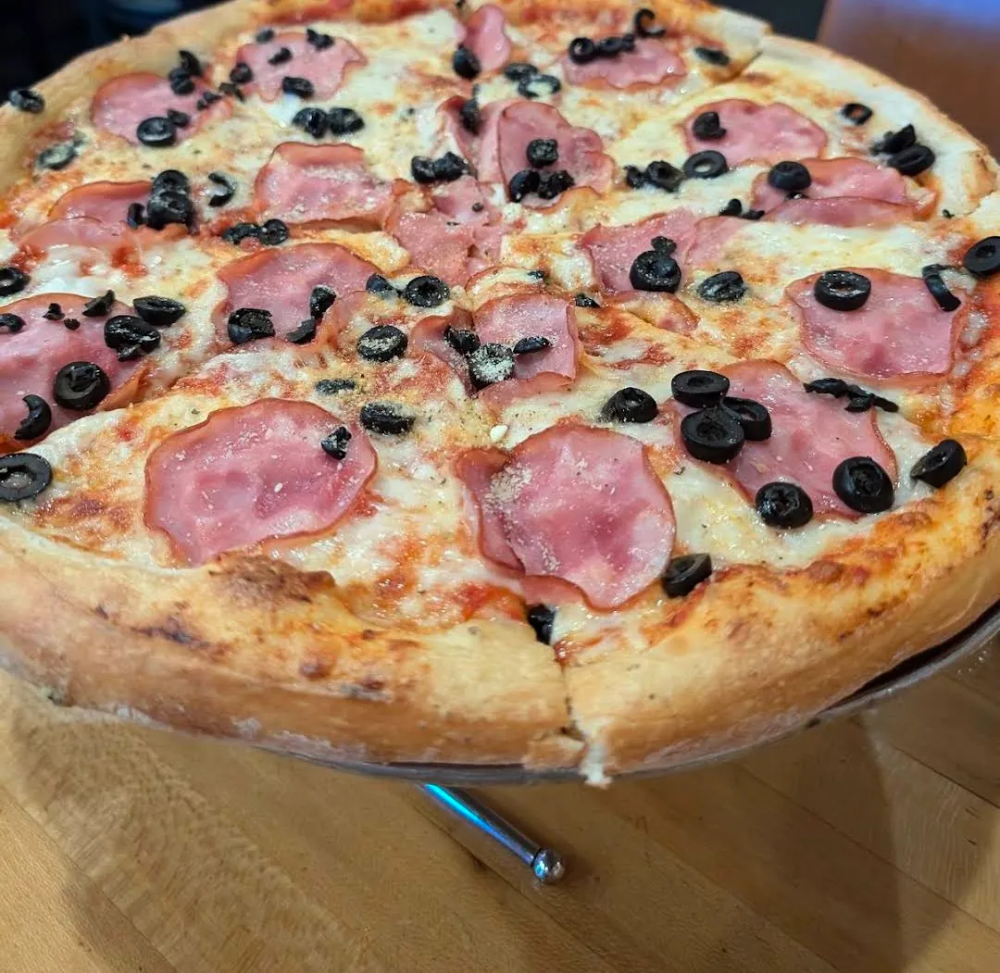

Uncle Joe's Pizzeria
Stone-Baked Pizza
11700 Old Seward Hwy, Anchorage, AK 99515
Rating: 5/5
Uncle Joe's Pizzeria is absolutely fantastic! From the moment you pull into the parking lot, the mouthwatering aroma of pizza and freshly baked dough draws you in. The food is phenomenal, with each bite better than the last. The service is just as amazing—our server was friendly, attentive, and made the experience even more enjoyable. It’s clear the team at Uncle Joe’s knows how to make great food and deliver exceptional service. I highly recommend this place for anyone looking for top-notch pizza and a warm, welcoming atmosphere. I'll definitely be back!
Gyro Pizza · Ham & Black Olive Pizza · Caesar Salad
About the place
Local Anchorage pizzeria founded in 1993, with four locations around town; this is the South Anchorage restaurant on Old Seward Highway, which also has a party room. Pizzas are hand crafted and stone baked on house-made dough, then brushed with garlic butter and sprinkled with Italian herbs and Romano. The menu also covers calzones, strombolis, baked subs, gyros, wings, pasta and salads, with local beer on tap. Signature pizzas include the spicy reindeer sausage, the taco pizza and the Gyro Pizza.
What other diners say: Reviewers on Yelp and Tripadvisor often single out the reindeer sausage pizza and the wide menu, and many call it a reliable local go-to for dine-in or delivery. Opinions on service are more mixed, with some reporting slow service on busy nights.
Sources: Uncle Joe's website and menu, Yelp and Tripadvisor. Summaries are paraphrased, not quotes.




Comments
Sign in with GitHub to leave a comment or reaction.